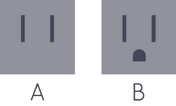

La Ciudad de México es una metrópolis vibrante con historia e innovación. En los últimos años se ha convertido en un núcleo para el emprendimiento social y tecnológico sin dejar de ser un centro de finanzas, política y gastronómico. A continuación se presenta información útil para los que nos visitan de fuera:
Hay vuelos a Ciudad de México desde cualquier gran aeropuerto en el mundo.
El transporte público en la ciudad de México no es muy amigable al turista. Se recomienda no tomar taxis de la calle. La alternativa es llamar a taxis certificados desde el restaurante u hotel. Otra opción es utilizar los servicios de taxi a través de aplicaciónes móviles. En México tenemos Uber, Cabify, y Yaxi. Le recomendamos que los descarguen desde su ciudad para que se puedan usarlos al llegar a México sin la necesidad de utilizar todos sus datos en roaming. Desde el aeropuerto: Hay taxis certificados en el aeropuerto. Usted puede comprar un boleto a su hotel en cualquiera de las cabinas.
Existen medidas de facilitación para ingresar a México sin visa que aplican al portador de pasaporte ordinario que acuda como Visitante sin permiso para realizar actividades remuneradas; dichas medidas consisten en:
a) Portar visa de los Estados Unidos de América, válida y vigente; o,
b) Presentar Tarjeta que lo acredite como Residente Permanente en Canadá, los Estados Unidos de América, Japón, el Reino Unido; o, en cualquiera de los países que integran el Espacio Schengen.
Para verificar si usted necesita una visa o no venir a México se puede comprobar aquí
Es preferible quedarse cerca del centro de la ciudad - donde ConDatos y todas las actividades paralelas se llevarán a cabo. México está dividido en Colonias. Las Colonias más de moda cerca a ConDatos son Centro, Roma Norte, Juárez y Condesa (del más cercano al más lejano). Para restaurantes y bares recomendamos la Roma y Condesa. Juárez está justo en Reforma, la calle principal de México, y se encuentra muy cerca de todos los espacios de ConDatos. En el Centro Histórico podrán encontrar atracciones como la plaza principal, la catedral e innumerables museos.
Las Propinas no estan incluídas. Es Práctica otorgar Entre el 10% y el 15% del total del Consumo en restaurantes, dependiendo de la Calidad del Servicio.
La Ciudad de México ha recibido una gran cantidad de prensa negativa en términos de su estatus de seguridad. En realidad, no es un lugar tan peligroso. Al igual que en cualquier gran ciudad, es necesario ser cauteloso. Especialmente cuando uno es turista. ConDatos y todas sus actividades paralelas se encuentran dentro de la zona céntrica de la ciudad. Hay que procurar mantenerse dentro de los barrios mencionados anteriormente, seguir las instrucciones para el transporte y más que nada, hacer uso del sentido común. Encontrarás que la Ciudad de México es acogedora y divertida.
Puede intercambiar pesos para su moneda local en el aeropuerto, hoteles, bancos, y en las oficinas de cambio. Para saltar este proceso también se puede ir a un cajero automático y retirar dinero con una tarjeta Visa o Mastercard. Consulta tu banco acerca de la comisión por este tipo de servicio. Normalmente vale la pena y se obtiene un tipo de cambio bastante decente. Los bancos están abiertos de 09 a.m. a 4 p.m.
Las tarjetas de crédito y débito son aceptadas en la mayoría de los establecimientos comerciales. Sin embargo, se recomienda portar dinero en efectivo, pues existen pequeños establecimientos que no aceptan pagos con tarjetas.
La Corriente Eléctrica en la Ciudad de México es de 110 Voltios y sí utilizan el los enchufes Tipo A y Tipo B (ver imagen). Los aparatos con voltaje diferente requieren de un adaptador para su uso.
